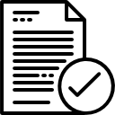
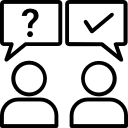

home > 인재채용 > 채용안내
채용안내
동아쏘시오그룹의 성장을 함께 이끌어갈 여러분의 도전을 기다립니다.
대졸신입 채용 프로세스
-
01 지원서 접수
-
 02 서류전형
-
03 온라인 전형
-
 04 실무면접
04 실무면접
-
 05 임원면접
-
 06 최종합격
06 최종합격
- 1. 지원서 접수
- · 공개채용 및 수시채용의 정해진 기간에 채용홈페이지에 접속하여 온라인 입사지원서를 접수시켜야 합니다.
- · 지원서 접수 시 채용공고에 있는 모집분야 및 세부사항을 잘 확인하여, 해당 직무가 속한 직무군을 선택하여 지원서를 온라인으로 작성 및 최종제출합니다.
- 2. 서류전형
- · 지원서의 각 항목에 기재된 내용과 자기소개서를 바탕으로, 지원자가 지원직무와 회사에 적합한 자격, 경험, 열정을 가진 인재인지를 종합적으로 평가합니다.
- 3. 온라인 전형
- · 뇌 과학 기반의 온라인 인성검사를 적용하여, 신뢰역량, 성과역량, 가치역량을 기반으로 지원자의 성장 가능성을 종합적으로 평가합니다.
- 4. 실무면접
- · 실제 업무를 수행하기 위한 기본 능력과 열정, 실무역량 등을 평가하는 1차 면접이 진행됩니다.
- · 현업 실무자 및 관리자가 면접관으로 참석합니다.(소요시간 : 30분 ~ 1시간)
- 5. 임원면접
- · 실무면접 합격자를 대상으로 관리자 및 임원이 면접관으로 참석합니다.
- · 지원직무에 필요한 역량에 대해 심층적으로 평가함과 동시에 조직 적합성도 같이 평가하는 절차입니다.
- · 지원자와 회사간 소통을 통해 동아쏘시오그룹 입사 후 직무 및 경력개발에 대해 더욱 알아가는 시간을 갖습니다.
- 6. 최종합격
- · 최종합격 통보받은 지원자는 채용건강검진을 거쳐 이상이 없을 경우 현업에 배치 됩니다.
- ✓ 전형 프로세스는 채용일정에 따라 변경될 수 있으며, 채용 진행 시 안내드립니다.